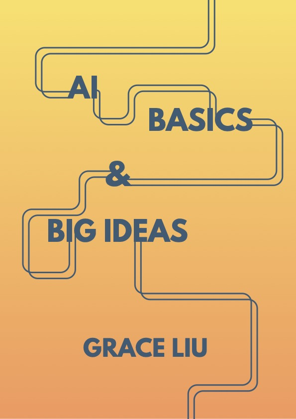

AI Basics & Big Ideas
A beginner's guidebook to artificial intelligence, written for readers around high school age and beginners looking to understand the history of AI. This was my capstone project for my professional writing minor with a focus on science communication at UCSB.
The premise came from a gap I had hit myself. There is a lot of material explaining AI to people who already have the vocabulary, and very little that gives a 14-year-old somewhere to start. Most introductions assume either a technical baseline or a self-learned interest.
The book had to work for someone with no prior exposure who didn't yet know whether they cared. That rules out the standard structure, which front-loads definitions and taxonomy. It meant earning attention before spending it, tying each concept to something the reader already recognizes. So, I made some of the topics that I felt were difficult to learn about a little more accessible, easy to digest, and entertaining!
Three chapters were completed within the course timeline.
